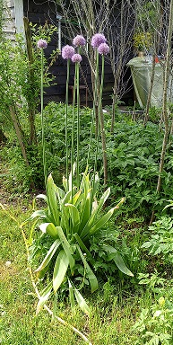

Из года в год весна начинается с того, что стоим "руки в брюки", живот выпятив, и смотрим на мясистую листву, торчащую из сугроба.
Это растение есть у большинства соседей. Ходим и спрашиваем друг у друга: - это что?
Кто говорит - лук такой, кто чеснок гигантский.
Листья имеют луково-чесночный вкус, но невыразительный.
Мороз, ледяной дождь, жару, ураганный ветер, бураны и суховеи он презирает. Ему все нравится.
А, что об этом думает искусственный интеллект, спросил я себя?
- Ооо...! Так это же лук афлатунский (декоративный лук, Allium aflatunense) или очень близкий к нему вид из декоративных луков.
Живет он на Тянь-Шане на Киргизском перевале Афлатунский.
Он там такие виды видел, что климат Ленобласти для него - чистый сахар.
Потому такой неприхотливый и ранний. Какая птица его с альпийских лугов Киргизии к нам затащила - ума не приложу.
К концу мая лук выкинул лилово-фиолетовые шарики на длиннющей ножке.
Поставил в вазу. Через неделю цветы не изменились - красивые крупные фиолетовые бутоны. Букет с желтыми полевыми цветами этого периода смотрится прекрасно. А можно с белыми шарами калины Бульденеж, цветущей в то же время.
Он декоративный, а не вкусный!
Фишка в цветах! А мы листья в салат...